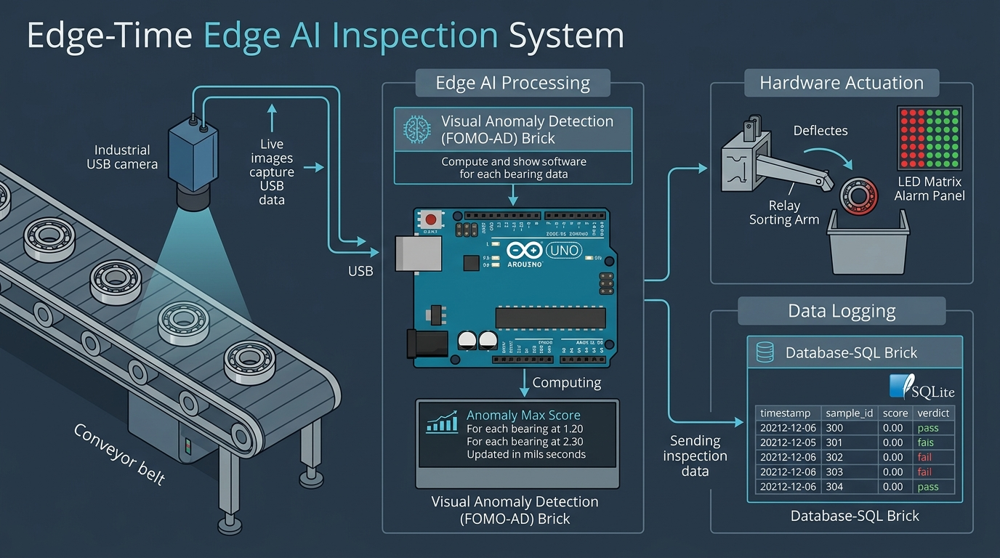
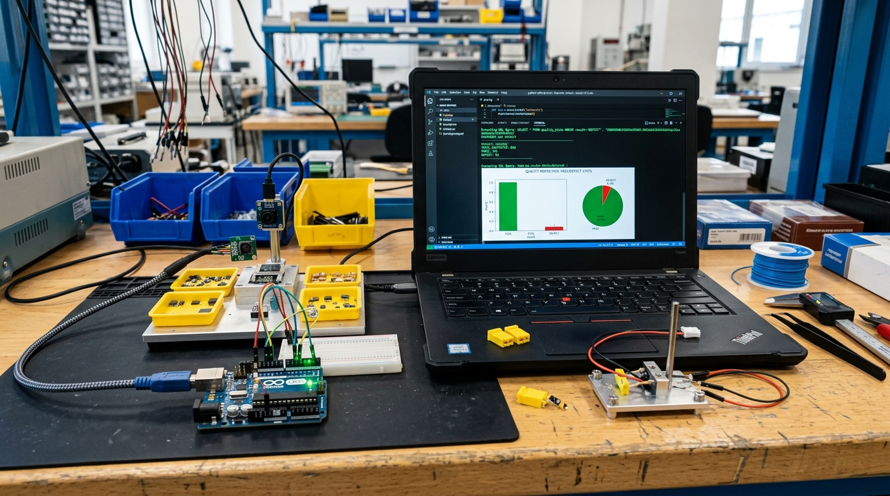

สาระสำคัญและผลการเรียนรู้ประจำบท
กรอบมาตรฐานการเรียนรู้ตามหลักสูตรแกนกลางการศึกษาขั้นพื้นฐาน และสมรรถนะสำคัญของผู้เรียน
การประยุกต์ใช้งานโมเดลตรวจจับความผิดปกติทางภาพในการผลิตจริง จำเป็นต้องเชื่อมต่อการรับภาพแบบเวลาจริง (Real-time Vision) เข้ากับระบบควบคุมทางกายภาพและระบบบันทึกข้อมูลเชิงประวัติ โดยการเรียกใช้โมดูล Visual Anomaly Detection Brick บนโปรแกรม Arduino App Lab เพื่อประมวลผลคะแนน Anomaly Score จากภาพถ่ายหรือกล้องดิจิทัล UVC พร้อมสั่งการแจ้งเตือนผ่านหน้าจอ LED Matrix และควบคุมรีเลย์ (Relay) ในการคัดแยกชิ้นงานชำรุด ควบคู่กับการจัดเก็บประวัติการตรวจสอบลงตารางฐานข้อมูล SQLite ผ่าน Database-SQL Brick เพื่อใช้ในการวิเคราะห์สถิติสรุปผลย้อนหลัง
ผลการเรียนรู้ที่คาดหวังตามกรอบสมรรถนะ (Learning Outcomes)
ผู้เรียนสามารถอธิบายสถาปัตยกรรมการทำงานร่วมกันระหว่างโมดูล Visual Anomaly Detection Brick, อุปกรณ์แจ้งเตือนทางกายภาพ และระบบฐานข้อมูลเชิงสัมพันธ์ SQLite บนบอร์ดพัฒนาได้อย่างถูกต้อง
ผู้เรียนสามารถเขียนชุดคำสั่งภาษาไพทอนเพื่อเรียกใช้คลาส VisualAnomalyDetection วนลูปอ่านภาพทดสอบจากโฟลเดอร์ และสกัดค่าคะแนนความผิดปกติ anomaly_max_score เพื่อเปรียบเทียบกับค่าขีดเริ่มเปลี่ยนได้อย่างถูกต้อง
ผู้เรียนสามารถเขียนโปรแกรมบันทึกผลการคัดแยกชิ้นงานลงตารางฐานข้อมูล SQLite แบบอัตโนมัติ ควบคุมรีเลย์และแผงไฟแสดงผล พร้อมทั้งสืบค้นรายงานสถิติอัตราของเสียประจำวันได้อย่างสมบูรณ์
ผู้เรียนมีความรอบคอบในการจัดการความถูกต้องของข้อมูล (Data Integrity) ตระหนักถึงเสถียรภาพของระบบอัตโนมัติในกระบวนการผลิต และมีความรับผิดชอบในการจัดทำรายงานเชิงวิศวกรรม
สถาปัตยกรรมระบบตรวจสอบคุณภาพแบบเวลาจริง (Real-time Edge AI Architecture)
ในระบบควบคุมคุณภาพการผลิตยุคอุตสาหกรรม 4.0 (Smart Factory) การประมวลผลปัญญาประดิษฐ์ไม่ได้จำกัดอยู่เพียงการแสดงผลคะแนนบนหน้าจอคอมพิวเตอร์ แต่ต้องทำงานแบบบูรณาการร่วมกับระบบกายภาพ (Cyber-Physical System) ได้อย่างครบวงจร โดยระบบประกอบด้วย 3 วงจรการทำงานหลักที่ประสานกันแบบคู่ขนาน:
- วงจรรับภาพและอนุมานผล (Inference Loop): กล้องอุตสาหกรรมส่งสัญญาณภาพสดผ่านพอร์ต USB สู่ Visual Anomaly Brick เพื่อประมวลผลผ่านโมเดล .eim ภายในระยะเวลาไม่เกิน 30-50 มิลลิวินาที
- วงจรควบคุมกายภาพ (Hardware Actuation Loop): เมื่อค่า Anomaly Max Score เกินเกณฑ์ที่กำหนด ระบบจะส่งสัญญาณไฟฟ้าขับรีเลย์ (Relay) สั่งการก้านปัดคัดแยกชิ้นงานชำรุดลงสู่ถังกักกัน พร้อมแสดงสัญลักษณ์เตือนบนหน้าจอแผงไฟ LED Matrix
- วงจรบันทึกข้อมูลและรายงานผล (Data Logging Loop): ข้อมูลผลการตรวจจับทุกชิ้นงานจะถูกส่งต่อไปยัง Database-SQL Brick เพื่อบันทึกลงฐานข้อมูล SQLite ประจำเครื่องอย่างถาวร ทำให้วิศวกรสามารถตรวจสอบย้อนกลับ (Traceability) ได้ทุกชิ้นงาน

รูปที่ 7.1: แผนภาพสถาปัตยกรรมการทำงานแบบบูรณาการ: กล้อง UVC, การประมวลผล VAD Brick บนบอร์ด, การขับเคลื่อน Actuator และการบันทึกลง Database-SQL Brick
กล้อง UVC ส่งสัญญาณภาพความละเอียด 640x480 พิกเซล ผ่านการย่อขนาดเป็น 96x96 พิกเซล และเข้าสู่โมเดล FOMO-AD คำนวณค่าความผิดปกติรายพิกัดกริด
หาก Anomaly Max Score ≥ 20.0 บอร์ดจะขับขาสัญญาณดิจิทัลเปิดรีเลย์ก้านปัดทันที เพื่อผลักชิ้นส่วนชำรุดออกจากสายพานลำเลียงโดยไม่ทำให้สายการผลิตสะดุด
บันทึกวันเวลา, รหัสชิ้นส่วน, ค่าคะแนน, สถานะการตัดสิน และระยะเวลาหน่วงในการประมวลผล (Latency) ลงฐานข้อมูล SQLite บนอุปกรณ์เพื่อวิเคราะห์แนวโน้ม
เนื้อหาบทเรียน 4 ตอน (Course Content Units)
การกำหนดค่าและเรียกใช้มอดูล Visual Anomaly Detection Brick
มอดูล Visual Anomaly Detection Brick บนโปรแกรม Arduino App Lab ทำหน้าที่เป็นส่วนติดต่อเชื่อมโยง (Abstraction Wrapper) ห่อหุ้มไฟล์ไบนารี .eim ทำให้ผู้พัฒนาสามารถเรียกประมวลผลภาพได้ด้วยภาษาไพทอนเพียงไม่กี่บรรทัด โดยมีขั้นตอนการทำงานภายในดังนี้:
- โหลดโมเดลเข้าสู่หน่วยความจำ: อ่านพาธไฟล์โมเดลจากตัวแปร
EI_V_ANOMALY_DETECTION_MODELในไฟล์ app.yaml - สร้างกระบวนการย่อยระดับระบบ (Subprocess IPC): สตาร์ตไฟล์ไบนารี .eim ขึ้นมาเป็น Background Worker ที่พร้อมรับส่งข้อมูลเทนเซอร์ตลอดเวลา
- รับข้อมูลภาพและส่งคืนผลลัพธ์: รับข้อมูลเฟรมภาพและส่งคืนผลลัพธ์ในรูปแบบพจนานุกรมที่มีค่า
anomaly_max_scoreและanomaly_mean_score
การดึงสัญญาณภาพสดจากกล้องดิจิทัล UVC และการอนุมานผลเวลาจริง
การเชื่อมต่อกล้องเว็บแคมมาตรฐาน (USB Video Class: UVC) เข้ากับบอร์ดพัฒนา Arduino UNO Q ใช้การอ้างอิงอุปกรณ์ผ่านดัชนีกล้อง (Device Index) เช่น /dev/video0 โดยมีข้อแนะนำในการตั้งค่าเพื่อให้ระบบมีอัตราเฟรมเรตที่เสถียรดังนี้:
ควรกำหนดความละเอียดการบันทึกภาพของกล้องไว้ที่ 640x480 พิกเซล (VGA) เพื่อประหยัดแบนด์วิดท์ของบัส USB และความเร็วในการแปลงสเกลภาพเข้าสู่โมเดล
โมเดล .eim บนบอร์ด Arduino UNO Q ใช้เวลาประมวลผลต่อหนึ่งเฟรมเพียง 20 - 35 มิลลิวินาที ทำให้ระบบสามารถตรวจสอบชิ้นงานได้มากกว่า 25-30 ชิ้นต่อวินาที
การควบคุมอุปกรณ์แจ้งเตือนทางกายภาพ (LED Matrix & Relay Sorting Arm)
เมื่อการคำนวณคะแนนความผิดปกติเสร็จสิ้น ระบบจะเปรียบเทียบค่า Anomaly Max Score กับเกณฑ์ขีดเริ่มเปลี่ยน (Threshold = 20.0) เพื่อสั่งการฮาร์ดแวร์ภายนอก:
| สถานะการตัดสิน (Verdict) | เงื่อนไขทางคณิตศาสตร์ | การสั่งการฮาร์ดแวร์กายภาพ |
|---|---|---|
| ผ่านเกณฑ์ (PASS) | max_score < 20.0 | แสดงสัญลักษณ์เครื่องหมายถูกสีเขียวบน LED Matrix และส่งต่อสายพาน |
| ไม่ผ่านเกณฑ์ (REJECT) | max_score ≥ 20.0 | เปิดสัญญาณเตือนสีแดง, ส่งสัญญาณ HIGH ขับรีเลย์ผลักชิ้นงานตกถังกักกัน |
การบันทึกและสืบค้นข้อมูลประวัติการตรวจสอบด้วย Database-SQL Brick
มอดูล Database-SQL Brick ทำหน้าที่บันทึกเหตุการณ์การตรวจสอบคุณภาพทุกครั้งลงในตาราง inspection_records บนฐานข้อมูล SQLite ในเครื่องอย่างเป็นระบบ ทำให้สามารถสืบค้นรายงานสรุปและจัดทำแดชบอร์ดติดตามคุณภาพการผลิตได้อย่างมีประสิทธิภาพ

รูปที่ 7.2: หน้าจอแสดงผลการสืบค้นข้อมูลใน Database-SQL Brick และการสรุปรายงานสถิติอัตราผลผลิต (Yield Rate)
การจัดเก็บประวัติผลการตรวจสอบคุณภาพพร้อมเวลาและค่าคะแนนความผิดปกติ ช่วยให้โรงงานสามารถวิเคราะห์แนวโน้มการสึกหรอของแม่พิมพ์เครื่องจักรได้ล่วงหน้า (Predictive Maintenance) หากพบว่าค่าคะแนนเฉลี่ยเริ่มสูงขึ้นเรื่อยๆ แม้จะยังไม่เกินเกณฑ์ 20.0 วิศวกรสามารถวางแผนหยุดซ่อมบำรุงได้ทันท่วงทีก่อนที่ชิ้นงานชำรุดจริงจะเกิดขึ้น
ตัวอย่างโค้ดและการทดสอบระบบ (Code Implementation & Testing)
ไฟล์โค้ดสำหรับบทเรียนนี้ได้รับการจัดเก็บไว้ในโฟลเดอร์ code_examples/chapter07 ประกอบด้วยไฟล์คอนฟิกูเรชัน app.yaml และสคริปต์ประมวลผลภาพสดพร้อมบันทึก SQL test_vad_live.py
name: Visual Anomaly Detection with SQL Logger
description: "ระบบตรวจจับความผิดปกติของภาพแบบเรียลไทม์พร้อมการบันทึกประวัติลงฐานข้อมูล SQL บน Arduino UNO Q"
ports: []
variables: {
EI_V_ANOMALY_DETECTION_MODEL: "/home/arduino/.arduino-bricks/ei-models/AnomalyDetection.eim",
DB_SQL_PATH: "/home/arduino/.arduino-bricks/databases/production_qc.db",
ANOMALY_THRESHOLD: "20.0",
CAMERA_DEVICE_INDEX: "0",
LED_MATRIX_FEEDBACK: "true",
ACTUATOR_RELAY_PIN: "7"
}
bricks:
- id: "visual_anomaly_brick"
type: "visual_anomaly_detection"
enabled: true
- id: "database_sql_brick"
type: "database_sql"
enabled: true
class ProductionQCManager:
"""คลาสจัดการระบบควบคุมคุณภาพและบันทึกข้อมูลลงฐานข้อมูล SQL บนบอร์ด"""
def __init__(self, db_path: str = DB_FILE_PATH):
self.db_path = db_path
self._init_database()
def _init_database(self):
with sqlite3.connect(self.db_path) as conn:
cursor = conn.cursor()
cursor.execute("""
CREATE TABLE IF NOT EXISTS inspection_records (
id INTEGER PRIMARY KEY AUTOINCREMENT,
timestamp TEXT NOT NULL,
part_id TEXT NOT NULL,
anomaly_mean REAL NOT NULL,
anomaly_max REAL NOT NULL,
threshold REAL NOT NULL,
verdict TEXT NOT NULL,
latency_ms REAL NOT NULL,
hardware_action TEXT
)
""")
conn.commit()
def log_inspection(self, part_id: str, mean_score: float, max_score: float,
verdict: str, latency: float, action: str) -> int:
now_str = datetime.now().strftime("%Y-%m-%d %H:%M:%S")
with sqlite3.connect(self.db_path) as conn:
cursor = conn.cursor()
cursor.execute("""
INSERT INTO inspection_records
(timestamp, part_id, anomaly_mean, anomaly_max, threshold, verdict, latency_ms, hardware_action)
VALUES (?, ?, ?, ?, ?, ?, ?, ?)
""", (now_str, part_id, mean_score, max_score, ANOMALY_THRESHOLD, verdict, latency, action))
conn.commit()
return cursor.lastrowid
$ python code_examples/chapter07/test_vad_live.py =========================================================================== บทเรียนที่ 7: ระบบตรวจสอบความผิดปกติจากภาพสดและบันทึกข้อมูล SQL (Real-time Visual Anomaly Detection & Database-SQL Brick Logging) =========================================================================== [*] ไฟล์ฐานข้อมูล SQLite: code_examples/chapter07/production_qc.db [*] เกณฑ์ขีดเริ่มเปลี่ยน (Anomaly Threshold): 20.0 [*] เริ่มต้นกระบวนการตรวจสอบคุณภาพสายการผลิตจำลอง (5 ชิ้นงาน)... [001] PART-BRG-0001 | Mean: 1.71 | Max: 1.87 | [PASS] (21.3 ms) └─ ฮาร์ดแวร์ปฏิบัติการ: CONVEYOR_NEXT: ADVANCE | LED: GREEN_READY [002] PART-BRG-0002 | Mean: 0.99 | Max: 3.41 | [PASS] (27.0 ms) └─ ฮาร์ดแวร์ปฏิบัติการ: CONVEYOR_NEXT: ADVANCE | LED: GREEN_READY [003] PART-BRG-0003 | Mean: 1.17 | Max: 3.78 | [PASS] (22.8 ms) └─ ฮาร์ดแวร์ปฏิบัติการ: CONVEYOR_NEXT: ADVANCE | LED: GREEN_READY [004] PART-BRG-0004 | Mean: 1.41 | Max: 5.64 | [PASS] (33.3 ms) └─ ฮาร์ดแวร์ปฏิบัติการ: CONVEYOR_NEXT: ADVANCE | LED: GREEN_READY [005] PART-BRG-0005 | Mean: 8.48 | Max: 40.48 | [REJECT] (20.2 ms) └─ ฮาร์ดแวร์ปฏิบัติการ: RELAY_TRIGGER: PUSH_DEFECT_BIN | LED: RED_ALARM =========================================================================== สรุปรายงานสถิติการควบคุมคุณภาพจาก Database-SQL Brick =========================================================================== ├─ จำนวนชิ้นงานที่ตรวจสอบทั้งหมด: 5 ชิ้น ├─ ผ่านเกณฑ์มาตรฐาน (PASS): 4 ชิ้น ├─ ไม่ผ่านเกณฑ์ (REJECT): 1 ชิ้น ├─ อัตราผลผลิตสมบูรณ์ (Yield): 80.0% └─ ระยะเวลาหน่วงเฉลี่ย: 24.89 มิลลิวินาที (ms)
ใบงานและภารกิจปฏิบัติการประจำบทเรียน (Practical Tasks)
ให้นักเรียนปฏิบัติตามภารกิจทั้ง 5 ขั้นตอน โดยคลิกทำเครื่องหมายลงในช่องสี่เหลี่ยมเมื่อปฏิบัติภารกิจเสร็จสมบูรณ์ ระบบจะคำนวณและบันทึกความก้าวหน้าลงในหน่วยความจำของอุปกรณ์โดยอัตโนมัติ
คำถามประเมินความเข้าใจและคิดวิเคราะห์ (Review Questions)
คลิกเพื่อดูแนวคำตอบ
คลิกเพื่อดูแนวคำตอบ
1. ใช้กลไก Frame Dropping: ประมวลผลเฉพาะเฟรมล่าสุด (Latest Frame) และทิ้งเฟรมที่ค้างในคิว
2. การกระตุ้นด้วยเซนเซอร์ตรวจจับ (Sensor Triggering): ไม่ต้องประมวลผลวิดีโอตลอดเวลา แต่ใช้เซนเซอร์แสง (Photoelectric Sensor) ตรวจจับเมื่อมีชิ้นงานเข้ามาตรงตำแหน่งกล้อง แล้วสั่งถ่ายภาพเดี่ยวเพื่อนำมาประมวลผลเพียงภาพเดียว ซึ่งช่วยประหยัดพลังงานและความร้อนของระบบ
คลิกเพื่อดูแนวคำตอบ
แบบทดสอบท้ายบทเรียนที่ 7 (ปรนัย 10 ข้อ)
ทดสอบความรู้ความเข้าใจตามเกณฑ์มาตรฐานตัวชี้วัดสาระเทคโนโลยี พร้อมเฉลยและบันทึกคะแนนอัตโนมัติ
บทเรียนที่ 8: การฝึกสอนโมเดลตรวจจับวัตถุด้วยสถาปัตยกรรม FOMO (Object Detection)
ก้าวสู่การตรวจจับวัตถุหลายชิ้นพร้อมระบุพิกัดตำแหน่ง (Bounding Box / Centroid) ด้วยโมเดลความเร็วสูง